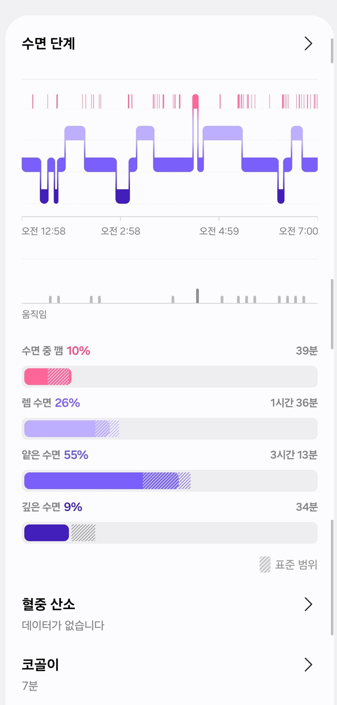
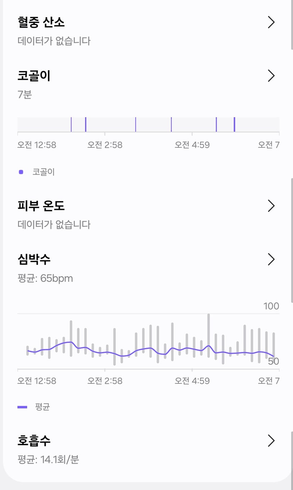
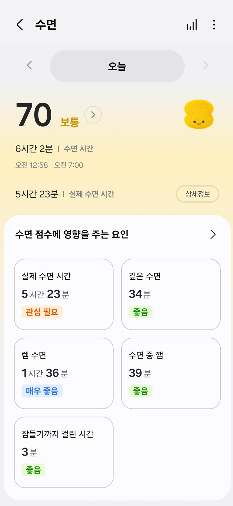
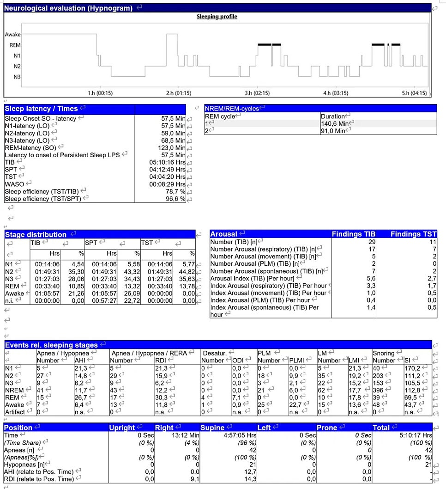

If you wear a smartwatch to bed, you get a graph each morning showing how much deep, REM and light sleep you had. Many people then search: "Is this much deep sleep normal?" "Am I getting too little REM?" Here I'll cover typical sleep stage proportions, what each stage does, how far smartwatch sleep data can be trusted — and when repeated poor sleep should prompt a check for sleep apnea.
In this article 9 sections · 7 min read
- Deep and REM sleep: what's typical?
- How sleep stages are divided
- What do deep sleep and REM sleep do?
- Deep sleep comes early; REM comes late
- How far can you trust smartwatch sleep data?
- A real comparison: smartwatch score vs sleep study
- Check for snoring, apneas and daytime sleepiness rather than worrying about deep sleep
- Habits that support deeper sleep
- Summary: patterns and symptoms matter more than numbers
Deep and REM sleep: what's typical?
Let's start with the "normal percentages" most people want to know. One caveat first: the numbers below are rough averages commonly seen on sleep studies in healthy adults, not strict cut-offs between normal and abnormal. They vary widely with age, sex, total sleep time, alcohol, medications and sleep disorders.
| Stage | Approximate share | Features |
|---|---|---|
| N1 | About 5% | Transition as you fall asleep |
| N2 | About 45–55% | The largest share of total sleep |
| N3 | About 15–20% | Deep / slow-wave sleep, linked to physical recovery |
| REM | About 20–25% | Vivid dreams; linked to memory and emotional processing |
Smartwatches usually combine N1 and N2 as "light sleep." Deep sleep (N3) naturally decreases with age. So rather than judging from one night's numbers, look at repeated patterns together with how you actually feel.
How sleep stages are divided
Sleep is broadly divided into REM and non-REM sleep. Non-REM sleep is further divided into N1, N2 and N3: N1 and N2 are relatively light; N3 is deep or slow-wave sleep. REM sleep is named after the rapid eye movements that occur in it; the brain is almost as active as when awake, but the body's muscles are relaxed. Vivid, story-like dreams are common in REM, though dreams can happen in other stages too.
After falling asleep, you move from light to deep sleep and then into REM, and this cycle repeats. Each cycle lasts roughly 90 minutes and occurs 4–6 times a night, though not always in exactly the same order or length.
What do deep sleep and REM sleep do?
- Light sleep (N1, N2): the entry into sleep and the link between stages. You wake easily.
- Deep sleep (N3, slow-wave sleep): the "dead to the world" sleep, closely linked to growth hormone release and physical recovery. But feeling refreshed in the morning depends not only on deep sleep, but also on total sleep time, how unbroken your sleep was, and breathing problems or arousals.
- REM sleep: involved in organizing memories, learning and processing emotions.
Deep sleep comes early; REM comes late
Deep sleep is concentrated in the first half of the night, while REM periods get longer toward the early morning. So if your total sleep is short or you wake often, it can be hard to get enough of both. That's why how deeply and continuously you sleep matters as much as how many hours.
How far can you trust smartwatch sleep data?
Smartwatches use wrist movement and heart-rate changes to estimate four states — awake, REM, light and deep sleep.
The key point: smartwatch sleep data is closer to a lifestyle reference than a diagnostic result. Watches don't measure brain waves; they estimate from movement and heart rate. They are fairly useful for total sleep time and bedtime/wake-up patterns, but they can count lying still while awake as sleep, or confuse deep and REM sleep. Stage times and percentages are best understood as the device algorithm's estimates rather than precise measurements. The most reliable method is an in-clinic sleep study, which measures brain waves, breathing and oxygen levels.
So don't let one night's numbers drive your mood. If short or frequently broken sleep shows up repeatedly over many nights, and you actually have daytime sleepiness or fatigue, it is worth looking at both your habits and the possibility of a sleep disorder.
A real comparison: smartwatch score vs sleep study
Here is real data: one night measured with a smartwatch, and a sleep study done at the clinic on a different night. Note that on the sleep study night, with sensors all over the body in an unfamiliar lab bed, sleep was actually worse than usual.



The smartwatch gave that night a sleep score of 70 ("fair"): 34 minutes of deep sleep rated "good," 1 hour 36 minutes of REM rated "very good," and 7 minutes of snoring. Looking at the numbers alone, it seemed a reasonably good night.

The stage numbers came out quite differently between the two methods. For example, deep sleep was 34 minutes on the smartwatch versus about 1 hour 27 minutes on the sleep study. Two things are mixed here: they were different nights, so the sleep itself differed; and the smartwatch estimates stages from wrist movement and heart rate rather than brain waves, so it can differ from a real test. That's why smartwatch stage times and percentages should be treated as rough estimates.
This is an illustrative case from two different nights, not a simultaneous validation study. The difference cannot establish the watch’s accuracy or its ability to detect OSA; a reassuring sleep score should not override symptoms or a clinical evaluation.
But the stage comparison wasn't the important finding. Even on a night of worse-than-usual sleep in the lab, more than 60 apneas and hypopneas occurred — more frequently during REM sleep and mostly while lying on the back. Looking only at the smartwatch's "70, fair," this would have been missed; the sleep study revealed a breathing problem during sleep that needed attention.
The lesson is clear: a good smartwatch score isn't enough to be reassured, and a bad one isn't a diagnosis either. A smartwatch can give you a reason to look into things; proper confirmation comes from testing.
Check for snoring, apneas and daytime sleepiness rather than worrying about deep sleep
Sleep apnea can fragment sleep through repeated breathing events and micro-arousals, reducing deep and REM sleep. But a low deep-sleep figure on a smartwatch can't diagnose sleep apnea — deep sleep estimates are influenced by age, the device, total sleep time, insomnia, alcohol, medications and measurement error.
- Loud snoring
- Pauses in breathing noticed by a bed partner
- Waking up choking or gasping
- Daytime sleepiness, morning headaches, poor concentration
- High blood pressure that is hard to control
Some smartwatches also show overnight oxygen changes or signs of breathing disturbance. Repeated oxygen drops can be a clue to sleep apnea, but wrist measurements have errors and other causes can lower readings. Conversely, normal readings don't rule out sleep apnea. Even sleep apnea notification features cleared by Korea's MFDS are screening tools that flag a risk of moderate-to-severe obstructive sleep apnea — not diagnostic tests.
Whether apneas actually occur, and how many times per hour, is confirmed with a sleep study, which assesses the number and type of breathing events, oxygen drops, micro-arousals and changes in sleep stages together.
Habits that support deeper sleep
- Keep consistent bedtimes and wake-up times
- Cut down on caffeine in the afternoon and evening, and on heavy drinking
- Avoid phones and bright screens right before bed
- Keep the bedroom dark, cool and quiet
- Get daylight and regular movement during the day
These habits help secure enough sleep time and improve continuity and overall satisfaction with sleep. But if snoring, apneas or daytime sleepiness continue despite better habits, it's worth checking separately for a sleep disorder.
Summary: patterns and symptoms matter more than numbers
Understanding sleep stages lets you look beyond "how long did I sleep?" to "how well did I sleep?" Deep sleep is closely tied to physical recovery, and REM sleep to memory, learning and emotion. Both matter, but there's no exact ratio you must hit — total sleep time, continuity and how you feel during the day all count. Smartwatch numbers are a useful reference but not perfect, so focus on repeated patterns and real symptoms rather than one night's data.
If you keep struggling with snoring, stopping breathing during sleep, daytime sleepiness or unexplained chronic fatigue, it's worth finding the cause.
This article is an English adaptation of a Korean post by Dr. Jungho Oh. It is general health information, not a diagnosis or treatment plan for any individual. Results and suitability of any test or treatment differ from person to person — please consult a doctor about your own situation.